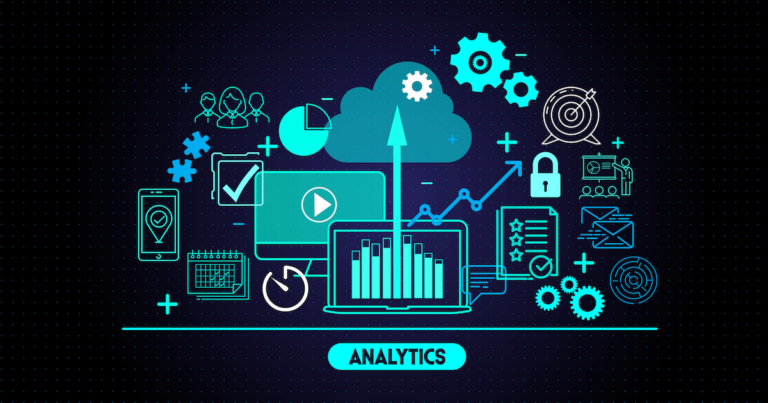
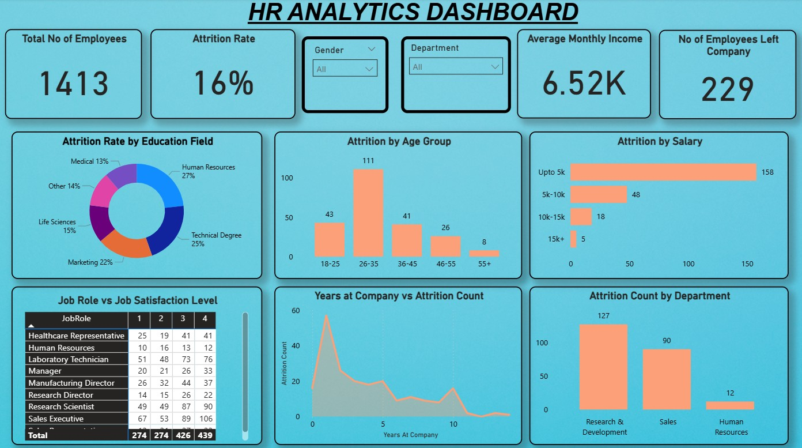

HR Analytics Dashboard
October 2025 – Present

Project Overview
Developed a comprehensive HR Analytics Dashboard using Power BI to provide data-driven insights into employee attrition, job satisfaction, and organizational performance. The dashboard enables HR professionals to make informed decisions about talent management and retention strategies.
Attrition Analysis
Real-time tracking of employee turnover rates
Job Satisfaction
Employee feedback visualization and trends
Interactive Reports
Dynamic filtering and drill-down capabilities
Technical Implementation
Data Sources
Integrated multiple HR data sources including employee databases, survey responses, performance metrics, and exit interview data. Consolidated information from HRIS, survey tools, and performance management systems.
Data Processing
Performed comprehensive data cleaning, transformation, and modeling using Power Query. Created calculated columns and measures using DAX to derive key HR metrics and KPIs.
Technologies Used
- Microsoft Power BI
- Power Query (M Language)
- DAX (Data Analysis Expressions)
- SQL for data extraction
- Excel for initial data validation
Key Metrics
- Employee Attrition Rate
- Job Satisfaction Scores
- Department-wise Performance
- Tenure Analysis
- Recruitment Efficiency
Results & Impact

Interactive HR Analytics Dashboard with key metrics
Key Achievements
- Identified key factors driving employee attrition
- Reduced time-to-insight from days to minutes
- Enabled proactive retention strategies
- Improved HR decision-making process
Dashboard Features
- Real-time attrition rate monitoring
- Department-wise performance comparisons
- Employee satisfaction trend analysis
- Interactive filtering by department, tenure, and role
Challenges & Solutions
Data Integration
Multiple data sources with different formats and update frequencies created integration challenges.
Solution: Implemented automated data pipelines using Power Query with scheduled refresh and data validation checks to ensure consistency.
Metric Standardization
Different departments used varying definitions for common HR metrics.
Solution: Established standardized KPI definitions and created calculated measures in DAX to ensure consistency across the organization.
My Contribution
In this project, I performed comprehensive data cleaning and data modeling, followed by visualizing the processed data using interactive graphs, KPI cards, and matrices to create an insightful HR Analytics Dashboard. My responsibilities included:
- Designing and implementing the data model in Power BI
- Creating calculated measures and columns using DAX
- Developing interactive visualizations and reports
- Ensuring data accuracy and dashboard performance
- Collaborating with HR team to validate insights